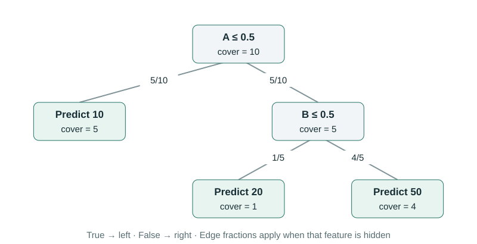
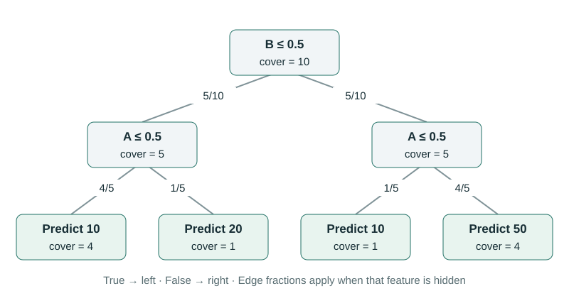

Choose What a Hidden Feature Means
The efficient algorithm answers the question defined by its group values. It cannot decide which group values express the comparison we want. Our first examples used branch covers. We will now compare that rule with replacing hidden inputs from reference rows and with conditioning on observed inputs.
To make the difference concrete, keep one prediction function, one customer, and one reference population fixed. Only the meaning of “hidden” will change.
A small reference population with dependent features
Use two binary inputs, A and B. The reference population has ten rows:
| A | B | Number of rows | Model prediction |
|---|---|---|---|
| 0 | 0 | 4 | 10 |
| 0 | 1 | 1 | 10 |
| 1 | 0 | 1 | 20 |
| 1 | 1 | 4 | 50 |
A and B often agree: eight of the ten rows have equal values. Both marginal distributions are still evenly divided between 0 and 1. The tree predicts 10 whenever A = 0; when A = 1, it predicts 20 for B = 0 and 50 for B = 1.


Explain A = 1, B = 1. Its prediction is 50. The reference mean is $(4\times10+1\times10+1\times20+4\times50)/10=27$. Thus every rule below shares a total difference of 23, but the shares will differ.
Rule 1: use the stored path covers
Reveal A = 1. The right subtree uses its own B covers: one row has B = 0 and four have B = 1. Consequently, $v(\{A\})=(1/5)20+(4/5)50=44$.
Reveal only B = 1. A remains hidden, so the root sends half the weight left and half right. The left returns 10, and B sends the right branch to 50. Therefore $v(\{B\})=0.5\times10+0.5\times50=30$.
With two features, each gets the average of its contributions when first and when second. A gets $[(44-27)+(50-30)]/2=18.5$. B gets $[(30-27)+(50-44)]/2=4.5$.
Rule 2: replace hidden inputs from whole reference rows
Reveal A = 1 by overwriting A in all ten reference rows. Keep each row’s B value. Across the full reference population, B is 0 half the time and 1 half the time, so the average becomes $0.5\times20+0.5\times50=35$.
Reveal B = 1 instead. Half the retained A values are 0 and half are 1. The average is again $0.5\times10+0.5\times50=30$. Hence A receives $[(35-27)+(50-30)]/2=14$, and B receives $[(30-27)+(50-35)]/2=9$.
This is the empirical background-replacement game used by feature_perturbation="interventional" in these examples. When several columns are hidden, take them together from the same reference row. Their relationships within that hidden group are retained. The relationship between that group and the customer’s revealed values is broken by replacement.
The name of the option does not turn a model comparison into a measured causal effect. Here we are evaluating a fixed predictor on constructed inputs. The data and assumptions needed to identify a real-world intervention are a separate matter.
Rule 3: retain only reference rows that match the known inputs
A conditional calculation asks for the average model output among reference rows compatible with what we know. Given A = 1, five rows remain: one with B = 0 and four with B = 1. The average is 44.
Given B = 1, the five matching rows contain one A = 0 row and four A = 1 rows. The average is $(1/5)10+(4/5)50=42$. The path rule gave 30 for this same group because it retained the root’s original 50/50 A weighting.
For this finite table, conditional A credit is $[(44-27)+(50-42)]/2=12.5$, while B credit is $[(42-27)+(50-44)]/2=10.5$. Revealing B supplies information about likely A values, and the conditional game includes that information.
| Explanation rule | v(A) | v(B) | A credit | B credit |
|---|---|---|---|---|
| Stored path covers | 44 | 30 | 18.5 | 4.5 |
| Reference replacement | 35 | 30 | 14 | 9 |
| Full conditional table | 44 | 42 | 12.5 | 10.5 |
Every row starts at 27, ends at 50, and sums to 23. A sum check cannot choose between them. They allocate different group-value tables.
Our exact matching calculation is possible because there are only two binary features and all four combinations occur. For continuous or high-dimensional inputs, estimating a full conditional distribution is a separate statistical problem. TreeExplainer’s path-dependent mode does not generally solve that problem.
The same function can have different path-cover explanations
Represent the same four predictions with a tree that tests B first, then A in both branches. Use exactly the same ten reference rows to set its covers.


In this representation, the path rule gives $v(\{A\})=35$ and $v(\{B\})=42$, producing A credit 8 and B credit 15. The function is unchanged, but the path-based group-value rule changed with the representation. The empirical replacement and full conditional calculations are unchanged because they evaluate the same function against the same reference table.
This is why the word “exact” needs its reference rule attached. The path algorithm exactly calculates the Shapley values of its path-cover game. It is not claiming that every tree encoding or every treatment of feature dependence must produce the same game.
Choose explicitly in Python
path_explainer = shap.TreeExplainer(
model,
feature_perturbation="tree_path_dependent",
model_output="raw",
)
reference_explainer = shap.TreeExplainer(
model,
data=reference_rows,
feature_perturbation="interventional",
model_output="raw",
)The TreeExplainer API documents the modes and their supported outputs. Specify the mode so supplying or removing a background does not silently change the intended comparison through an automatic setting.
Use a reference population that matches the question: the training population, recent production traffic, or a deliberately chosen comparison group. Sample it reproducibly, record which rows it contains, and check sensitivity to reasonable alternatives. More reference rows reduce the sampling variation of that chosen comparison; they do not make a poorly chosen comparison meaningful.
The exact lab verifies all four calculations, including the reordered tree. With the reference choice explicit, we can now combine explanations across trees without changing the question halfway through.